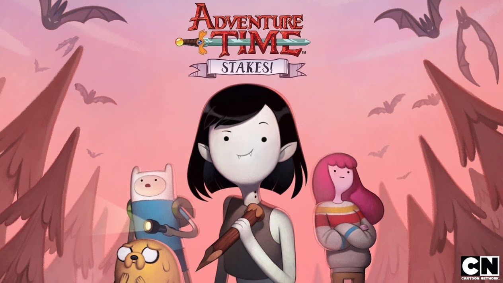
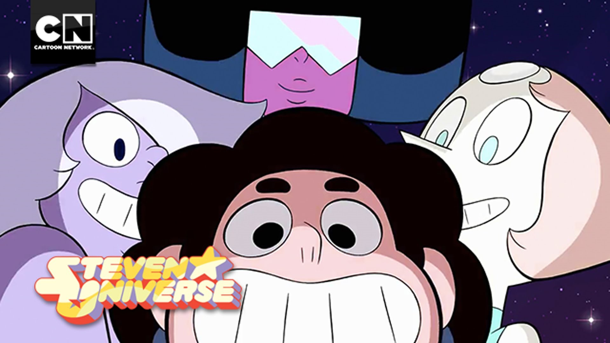

Adventure Time and Steven Universe: Delivering Messages Everyone Needs to Hear!
By Peri Murray | Opinion
February 3rd 2016 | 9:00am

This is the title card for the new Adventure Time special called "Stakes" focusing on Marceline the Vampire Queen.
WARNING: THIS ARTICLE CONTAINS SPOILERS FOR ADVENTURE TIME SEASON 7 AND STEVEN UNIVERSE SEASON 2
Cartoons are meant for the entertainment of children, teens, and adults. They are meant to give you an escape into a new and exciting world where possibilities are endless. But along with the fun and games come important subliminal and direct messages towards viewers of all ages. Recent cartoons that have done an amazing job at this are Steven Universe and Adventure Time.
Adventure Time, a show that follows Finn the Human and Jake the Dog on tons of fun adventures, had a recent special called "Stakes" which focused on Marceline the Vampire Queen and her struggle to grow up and become an adult. But in order to do that she must sacrifice her immortality. At the end of the special, she comes to terms with being immortal and even became more mature in the process. Adventure Time delivered a subliminal message saying that growing up is very difficult and validates that it's okay because it is hard, and you don't have to do it all at once; it's an adventure.
Pendleton Ward, the creator of Adventure Time, in his interview with Rolling Stones in 2014 stated "I was fat and I had a bowl cut and I had rollerblades," he continues. "I would put my Magic cards in a backpack and skate down to the comic shop. Just super awkward." Ward wasn't a super cool or popular kid, he like to keep to himself. This made his adventure of growing up a little more challenging, but who's coming to age journey doesn't have their ups and downs? This inspired Adventure Time because growing up can have it's fun moments, but there can also be some serious situations and that's what Adventure Time explicitly shows throughout each episode.
Steven Universe follows the half-magic, half-human Steven as he and his ageless, mystical mentors the Crystal Gems protect their home of Beach City from intergalactic threats. Everything happening in the series is from Steven's perspective, so whatever is hidden from Steven is also hidden from the viewers. But Steven Universe has two recurring themes throughout their episodes; trust and validation.

These are the Crystal Gems! (Top: Garnet, Left: Amethyst, Right: Pearl, Middle: Steven)
In a recent episode called "Message Received", Steven becomes heartbroken after Peridot, an alien from the Crystal Gems homeworld who becomes stranded on Earth who later befriends Steven, betrays his trust and disappoints him. Steven is upset with himself and his instinct to put all his trust in people so easily until mother figure, Garnet, comes to comfort him.
She tells him " You offered her a lot of your trust" Steven replies with "I know! And it blew up in my face!" You guys have been protecting the Earth for thousands of years...she could have destroyed all that why did I think I could change her mind" Garnet replies with "Its good you believe in everyone Steven, like your mother, you seem to have a little more patience than the rest of us. But the truth his, not everyone deserves that patience."
Garnet validates how Steven feels and tells him it's good to believe in people and trust them but for some, you can't allow yourself to place so much of you into them.
I agree with these messages these shows are delivering and would be happy my children are being exposed to them. But some disagree with the portrayal of slight homosexuality in the Steven Universe. Russia has gone as far as to censor the show by turning Ruby, one of the gem that makes Garnet, into a man. There is even a petition in place to censor the LGBT themes in Steven Universe on Change.com by some who feels very strongly about the themes.
"I loved watching Steven Universe with my kids but same sex relationships is not a topic that should be discussed in children's programing. The kiss between Ruby and Sapphire was over the top for a children's cartoon. We are signing this petition for Cartoon Network to censor current episodes "Jailbreak" and "Roses Scabbard" to exclude LGBT themes and to censor future episodes." This is the claim the creator of the petition is standing by. There's just so much hate on shows like Adventure Time and Steven Universe who really are passing on messages to this and the next generation, that they could relate to actual situations in their lives one day. All I ask is that you support these shows and along with the positive messages they are trying to convey to everyone of all ages.